National Institute of Standards and Technology
Abstract
This chapter presents both a summary of past research done in the development of ranking algorithms and detailed instructions on implementing a ranking type of retrieval system. This type of retrieval system takes as input a natural language query without Boolean syntax and produces a list of records that "answer" the query, with the records ranked in order of likely relevance. Ranking retrieval systems are particularly appropriate for end-users.
Boolean systems were first developed and marketed over 30 years ago at a time when computing power was minimal compared with today. Because of this, these systems require the user to provide sufficient syntactical restrictions in their query to limit the number of documents retrieved, and those retrieved documents are not ranked in order of any relationship to the user's query. Although the Boolean systems offer very powerful on-line search capabilities to librarians and other trained intermediaries, they tend to provide very poor service to end-users, particularly those who use the system on an infrequent basis (Cleverdon 1983). These end-users are likely to be familiar with the terminology of the data set they are searching, but lack the training and practice necessary to get consistently good results from a Boolean system because of the complex query syntax required by these systems. The ranking approach to retrieval seems to be more oriented toward these end-users. This approach allows the user to input a simple query such as a sentence or a phrase (no Boolean connectors) and retrieve a list of documents ranked in order of likely relevance.
The main reason the natural language/ranking approach is more effective for end-users is that all the terms in the query are used for retrieval, with the results being ranked based on co-occurrence of query terms, as modified by statistical term-weighting (to be explained later in the chapter). This method eliminates the often-wrong Boolean syntax used by end-users, and provides some results even if a query term is incorrect, that is, it is not the term used in the data, it is misspelled, and so on. The ranking methodology also works well for the complex queries that may be difficult for end-users to express in Boolean logic. For example, "human factors and/or system performance in medical databases" is difficult for end-users to express in Boolean logic because it contains many high- or medium-frequency words without any clear necessary Boolean syntax. The ranking method would do well with this query.
This chapter describes the implementation of a ranking system and is organized in the following manner. Section 14.2 shows a conceptual illustration of how ranking is done. Section 14.3 presents various theoretical models used in ranking and reviews past experiments using these models. Section 14.4 describes results from several experiments directly comparing various ranking schemes, along with brief discussions of the type of ranking methods found in the few operational systems that have used this retrieval technique. Section 14.5 summarizes the results from sections 14.3 and 14.4, presenting a series of recommended ranking schemes for various situations. Section 14.6 describes the implementation of a basic ranking retrieval system, with section 14.7 showing possible variations to this scheme based on retrieval environments. Section 14.8 discusses some topics closely related to ranking and provides some suggestions for further reading in these areas, and section 14.9 summarizes the chapter.
The terms "record" and "document" are used interchangeably throughout this chapter, as are the terms "data set," "database," and "collection," depending on the retrieval environment being discussed.
Assume that a given textual data set uses i unique terms. A document can then be represented by a vector (t1, t2, t3, . . . , tn), where ti has a value of 1 if term i is present, and 0 if term i is absent in the document. A query can be represented in the same manner. Figure 14.1 shows this representation for a data set with seven unique terms.
The top section of Figure 14.1 shows the seven terms in this data set. The second section shows a natural language query and its translation into a conceptual vector, with 1's in vector positions of words included in the query, and 0's to indicate a lack of those words. For example, the first "1" indicates the presence of the word "factor," the second "1" indicates the presence of the word "information," the first "0" indicates the absence of the word "help." The third section of Figure 14.1 shows a similar conceptual representation of three documents in this data set. To determine which document best matches the query, a simple dot product of the query vector and each document vector is made (left side of the fourth section) and the results used to rank the documents.
It is possible to perform the same operation using weighted vectors as shown in the right side of the bottom section of Figure 14.1. In the example, each term is weighted by the total number of times it appears in the record, for example, "factors" appears twice in document 1, "information" appears three times in document 1, and so on. These term-weights could reflect different measures, such as the scarcity of a term in the data set (i.e., "human" probably occurs less frequently than "systems" in a computer science data set), the frequency of a term in the given document (as shown in the example), or some user-specified term-weight. This term-weighting usually provides substantial improvement in the ranking.
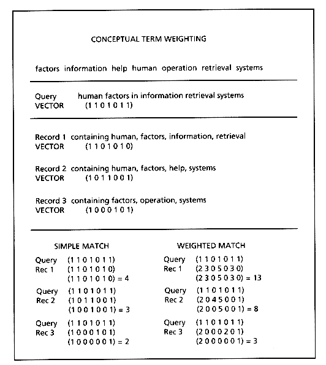
In 1957 Luhn published a paper proposing a statistical approach to searching literary information. He suggested that "the more two representations agreed in given elements and their distribution, the higher would be the probability of their representing similar information." Maron and Kuhns (1960) went much further by suggesting how to actually weight terms, including some small-scale experiments in term-weighting. The information retrieval research community has continued to develop many models for the ranking technique over the last 30 years (for an overview, see Belkin and Croft [1987]). Although it is not necessary to understand the theoretical models involved in ranking in detail in order to implement a ranking retrieval system, it is helpful to know about them as they have provided a framework for the vast majority of retrieval experiments that contributed to the development of the ranking techniques used today.
All the experimental results presented in the models are based on using standard test collections and using standard recall and precision measures for evaluation. Results are presented in a roughly chronological order to provide some sense of the development of knowledge about ranking through these experiments.
Ranking models can be divided into two types: those that rank the query against individual documents and those that rank the query against entire sets of related documents. The first type of ranking model, those that rank individual documents against the query, covers several theoretical models, but the principle ones are the vector space model and the probabilistic model.
The sample document and query vectors described in section 14.2 can be envisioned as an n-dimensional vector space, where n corresponds to the number of unique terms in the data set. A vector matching operation, based on the cosine correlation used to measure the cosine of the angle between vectors, can then be used to compute the similarity between a document and a query, and documents can be ranked based on that similarity.
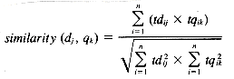
where
This model has been used as the basis for many ranking retrieval experiments, in particular the SMART system experiments under Salton and his associates (1968, 1971, 1973, 1981, 1983, 1988). These ranking experiments started in 1964 at Harvard University, moved to Cornell University in 1968, and form a large part of the research in information retrieval. The SMART experiments cover many areas of information retrieval such as relevance feedback, clustering, and experiments with suffixing, synonyms, and phrases. Only those experiments dealing directly with term-weighting and ranking will be discussed here.
Early experiments (Salton and Lesk 1968; Salton 1971, p. 143) using the SMART system tested an overlap similarity function against the cosine correlation measure and tried simple term-weighting using the frequency of terms within the documents. These experiments showed that within-document frequency weighting improved performance over no term-weighting (in varying amounts depending on the test collection used). Further, they showed that use of the cosine correlation with frequency term-weighting provided better performance than the overlap similarity because of the automatic inclusion of document length normalization by the cosine similarity function (again, the results varied somewhat depending on the test collection used).
A second major set of experiments was done by Salton and Yang (1973) to further develop the term-weighting schemes. Of particular interest in these experiments were the term-weighting schemes relying on term importance within an entire collection rather than only within a given document. Clearly more weight should be given to query terms matching document terms that are rare within a collection. Salton and Yang were able to show significant performance improvement using a term-weighting scheme that combined the within-document frequency weighting with a new term-weighting scheme, the inverted document frequency (IDF; Sparck Jones 1972) that is based on the Zipf distribution of a term within the entire collection (see page 373 for the definition of IDF).
A recent paper by Salton and Buckley (1988) summarizes 20 years of SMART experiments in automatic term-weighting by trying 287 distinct combinations of term-weighting assignments, with or without cosine normalization, on six standard collections. Besides confirming that the best document term-weighting is provided by a product of the within-document term frequency and the IDF, normalized by the cosine measure, they show performance improvements using enhanced query term-weighting measures for queries with term frequencies greater than one. These weighting schemes are further discussed in section 14.5.
Although a model of probabilistic indexing was proposed and tested by Maron and Kuhns (1960), the major probabilistic model in use today was developed by Robertson and Sparck Jones (1976). This model is based on the premise that terms that appear in previously retrieved relevant documents for a given query should be given a higher weight than if they had not appeared in those relevant documents. In particular, they presented the following table showing the distribution of term t in relevant and nonrelevant documents for query q.
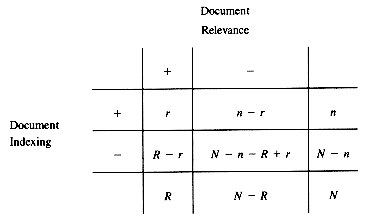
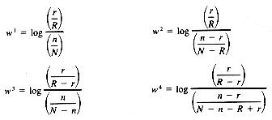
They then use this table to derive four formulas that reflect the relative distribution of terms in the relevant and nonrelevant documents, and propose that these formulas be used for term-weighting (the logs are related to actual use of the formulas in term-weighting).
Robertson and Sparck Jones also formally derive these formulas, and show that theoretical preference is for F4.
Formula F1 had been used by Barkla (1969) for relevance feedback in a SDI service and by Miller (1971) in devising a probabilistic search strategy for Medlars. It was also used by Sparck Jones (1975) in devising optimal performance yardsticks for test collections. Formula F4 (minus the log) is the term precision weighting measure proposed by Yu and Salton (1976).
Robertson and Sparck Jones used these four formulas in a series of experiments with the manually indexed Cranfield collection. They did experiments using all the relevance judgments to weight the terms to see what the optimal performance would be, and also used relevance judgments from half the collection to weight the terms for retrieval from the second half of the collection. In both cases, formula F4 was superior (closely followed by F3), with a large drop in performance between the optimal performance and the "predictive" performance, as would be expected. The experimental verification of the theoretical superiority of F4 provided additional weight to the importance of this new model.
The use of this theory as a predictive device was further investigated by Sparck Jones (1979a) who used a slightly modified version of F1 and F4 and again got much better results for F4 than for F1, even on a large test collection. Sparck Jones (1979b) tried using this measure (F4 only) in a manner that would mimic a typical on-line session using relevance feedback and found that adding the relevance weighting from only the first couple of relevant documents retrieved by a ranking system still produced performance improvements.
Work up to this point using probabilistic indexing required the use of at least a few relevant documents, making this model more closely related to relevance feed-back than to term-weighting schemes of other models. In 1979 Croft and Harper published a paper detailing a series of experiments using probabilistic indexing without any relevance information. Starting with a probabilistic restatement of F4, they assume that all query terms have equal probability of occurring in relevant documents and derive a term-weighting formula that combines a weight based on the number of matching terms and on a term-weighting similar to the IDF measure.
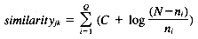
where
Experimental results showed that this term-weighting produced somewhat better results than the use of the IDF measure alone. Being able to provide different values to C allows this weighting measure to be tailored to various collections. Setting C to 1 ranks the documents by IDF weighting within number of matches, a method that was suitable for the manually indexed Cranfield collection used in this study (because it can be assumed that each matching query term was very significant). C was set much lower in tests with the UKCIS2 collection (Harper 1980) because the terms were assumed to be less accurate, and the documents were very short (consisting of titles only).
Croft (1983) expanded his combination weighting scheme to incorporate within-document frequency weights, again using a tuning factor K on these weights to allow tailoring to particular collections. The results show significant improvement over both the IDF weighting alone and the combination weighting, with the scaling factor K playing a large part in tuning the weighting to different collections.
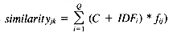
where
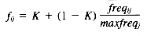
where
The best value for K proved to be 0.3 for the automatically indexed Cranfield collection, and 0.5 for the NPL collection, confirming that within-document term frequency plays a much smaller role in the NPL collection with its short documents having few repeating terms.
Several other models have been used in developing term-weighting measures. The inverted document frequency measure heavily used in implementing both the vector space model and the probabilistic model was derived by Sparck Jones (1972) from observing the Zipf distribution curve for collection vocabulary. Others have tried more complex term distributions, most notably the 2-Poisson model proposed by Bookstein and Swanson (1974) and implemented and tested by Harter (1975) and Raghavan et al. (1983). This distribution model proved much less successful because of the difficulty in estimating the many parameters needed for implementation.
The most well known of the set-oriented models are the clustering models where a query is ranked against a hierarchically grouped set of related documents. This model is the subject of Chapter 16 and will not be further discussed here.
Models based on fuzzy set theory have been proposed (for a summary, see Bookstein [1985]) but have not received enough experimental implementations to be used in practice (except when combined with Boolean queries such as in the P-Norm discussed in Chapter 15).
The theory of rough sets has been applied to information retrieval (Srinivasan 1989) but similarly has not been developed far enough to be used in practice.
There have been several studies examining the various factors involved in ranking that have not been based on any particular model but have instead used some method of comparing directly various similarity measures and term-weighting schemes.
Sparck Jones (1973) explored different types of term frequency weightings involving term frequency within a document, term frequency within a collection, term postings within a document (a binary measure), and term postings within a collection, along with normalizing these measures for document length. She used four collections, with indexing generally taken from manually extracted keywords instead of using full-text indexing, and with all queries based on manual keywords. Her results showed that using the term frequency (or postings) within a collection always improved performance, but that using term frequency (or postings) within a document improved performance only for some collections. The various term-weighting schemes were not combined in this experiment.
McGill et al. (1979) examined the literature from different fields to select 67 similarity measures and 39 term-weighting schemes. He used these to rank results from Boolean retrievals using both controlled (manually indexed) and uncontrolled (full-text) indexing. For both controlled and uncontrolled vocabulary he found a significant difference in the performance of similarity measures, with a group of about 15 different similarity measures all performing significantly better than the rest. This group included both the cosine correlation and the inner product function used in the probabilistic models. The term-weighting results were more mixed, with no significant difference found when using controlled vocabulary (i.e., term-weighting made no difference) and an overall significant difference found for uncontrolled vocabulary. There was a lack of significant difference between pairs of term-weighting measures for uncontrolled vocabulary, however, which could indicate that the difference between linear combinations of term-weighting schemes is significant but that individual pairs of term-weighting schemes are not significantly different.
A different approach was taken by Harman (1986). She selected four term-weighting factors proven important in past research and tried different combinations in order to arrive at an "optimum" term-weighting scheme. Full-text indexing was used on various standard test collections, with full-text indexing also done on the queries. The four factors investigated were: the number of matches between a document and a query, the distribution of a term within a document collection, the frequency of a term within a document, and the length of the document. Two different measures for the distribution of a term within a document collection were used, the IDF measure by Sparck Jones and a revised implementation of the "noise" measure (Dennis 1964; Salton and McGill 1983). Note that the use of noise here refers to how much a term can be considered useful for retrieval versus being simply a "noisy" term, and examines the concentration of terms within documents rather than just the number of postings or occurrences. She found that when using the single measures alone, the distribution of the term within the collection improved performance almost twice as much for the Cranfield collection as using only within-document frequency. Combining the within-document frequency with either the IDF or noise measure, and normalizing for document length improved results more than twice as much as using the IDF or noise alone in the Cranfield collection. Other collections showed less improvement, but the same relative merit of the term-weighting schemes was found. The noise measure consistently slightly outperformed the IDF (however with no significant difference).
Some ranking experiments have relied more on document or intradocument structure than on the term-weighting described earlier. Bernstein and Williamson (1984) built a ranking retrieval system for a highly structured knowledge base, the Hepatitis Knowledge Base. Their ranking algorithms used not only weights based on term importance both within an entire collection and within a given document, but also on the structural position of the term, such as within summary paragraphs versus within text paragraphs. A very elaborate weighting scheme was devised for this experiment, tailored to the particular structure of the knowledge base. In SIBRIS, an operational information retrieval system (Wade et al. 1989), document and query structures are also used to influence the ranking, increasing term-weights for terms in titles of documents and decreasing term weights for terms added to a query from a thesaurus.
A very different approach based on complex intradocument structure was used in the experiments involving latent semantic indexing (Lochbaum and Streeter 1989). The indexing and retrieval were based on the singular value decomposition (related to factor analysis) of a term-document matrix from the entire document collection. This was combined with weighting using both a function of term frequency within a document (the root mean square normalization), and a function of term frequency within the entire collection (the noise or entropy measure, or alternatively the IDF measure). The results were generally superior to those using term-weighting alone, although further development is necessary before this approach is fast enough for use in large retrieval systems.
Several operational retrieval systems have implemented ranking algorithms as central to their search mechanism. The SIRE system, as implemented at Syracuse University (Noreault et al. 1977) built a hybrid system using Boolean searching and a vector-model-based ranking scheme, weighting by the use of raw term frequency within documents (for more on the hybrid aspects of this system, see section 14.7.3). A commercial outgrowth of this system, marketed as Personal Librarian, uses ranking based on different factors, including the IDF and the frequency of a term within a document. This system assigns higher ranks to documents matching greater numbers of query terms than would normally be done in the ranking schemes discussed experimentally.
The CITE system, designed as an interface to MEDLINE (Doszkocs 1982), ranked documents based solely on the IDF weighting, as no within-document frequencies were available from the MEDLINE files. For details on the search system associated with CITE, see section 14.7.2. The OPAKI project (Walker and Jones 1987) worked with on-line catalogs and also used the IDF measure alone. Although other small-scale operational systems using ranking exist, often their ranking algorithms are not clear from publications, and so these are not listed here.
In looking at results from all the experiments, some trends clearly emerge.
1. The use of term-weighting based on the distribution of a term within a collection always improves performance (or at minimum does not hurt performance).The IDF measure has been commonly used, either in its form as originally used, or in a form somewhat normalized.
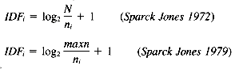
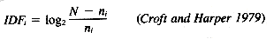
where
A possible alternative is the noise or entropy measure tried in several experiments .
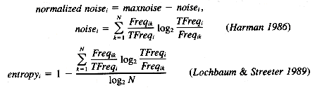
where
2. The combination of the within-document frequency with the IDF weight often provides even more improvement. There are several reasons why this improvement is inconsistent across collections. First, it is very important to normalize the within-document frequency in some manner, both to moderate the effect of high-frequency terms in a document (i.e., a term appearing 20 times is not 20 times as important as one appearing only once) and to compensate for document length. This normalization has taken various forms in different experiments, but the lack of proper normalization techniques in some experiments has likely hidden possible improvements. A second reason for the inconsistent improvements found for within-document frequencies is the fact that some collections have very short documents (such as titles only) and therefore within-document frequencies play no role in these collections. Finally, the effects of within-document frequency may need to be tailored to collections, such as was done by Croft (1983) in using a sliding importance factor K, and by Salton and Buckley (1988) in providing different combination schemes for term-weighting. This tailoring seems to be particularly critical for manually indexed or controlled vocabulary data where use of within-document frequencies may even hurt performance. Either of the following normalized within-document frequency measures can be safely used.
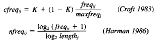
where
3. Assuming within-document term frequencies are to be used, several methods can be used for combining these with the IDF measure. The combination recommended for most situations by Salton and Buckley is given below (a complete set of weighting schemes is presented in their 1988 paper).
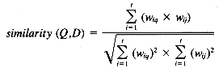
where
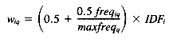
and
Salton and Buckley suggest reducing the query weighting wiq to only the within-document frequency (freqiq) for long queries containing multiple occurrences of terms, and to use only binary weighting of documents (Wij = 1 or 0) for collections with short documents or collections using controlled vocabulary.
Many combinations of term-weighting can be done using the inner product. Whereas there is more flexibility available here than in the cosine measure, the need for providing normalization of within-document frequencies is more critical. Two possible combinations are given below that calculate the matching strength of a query to document j, with symbol definitions the same as those previously given.
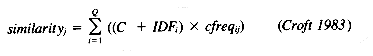
where
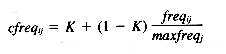
C should be set to low values (near 0) for automatically indexed collections, and to higher values such as 1 for manually indexed collections. K should be set to low values (0.3 was used by Croft) for collections with long (35 or more terms) documents, and to higher values (0.5 or higher) for collections with short documents, reducing the role of within-document frequency.
One alternative ranking using the inner product (but without adjustable constants) is given below.
4. It can be very useful to add additional weight for document structure, such as higher weightings for terms appearing in the title or abstract versus those appearing only in the text. This additional weighting needs to be considered with respect to the particular data set being used for searching. User weighting can also be considered as additional weighting, although this type of weighting has generally proven unsatisfactory in the past.
5. The use of relevance weighting after some initial retrieval is very effective. Relevance weighting is discussed further in Chapter 11 on relevance feedback.
This section will describe a simple but complete implementation of the ranking part of a retrieval system. Modifications of this implementation that enhance its efficiency or are necessary for other retrieval environments are given in section 14.7, with cross-references made to these enhancements throughout this section.
The implementation will be described as two interlocking pieces: the indexing of the text and the using (searching) of that index to return a ranked list of record identification numbers (ids). The index shown is a straightforward inverted file, created once per major update (thus only once for a static data set), and is used to provide the necessary speed for searching. Although it is possible to build a ranking retrieval system without some type of index (either by storing and searching all terms in a document or by using signature files in ranking such as described in section 14.8.5), the use of these indices improves efficiency by several orders of magnitude. The penalty paid for this efficiency is the need to update the index as the data set changes. Except for data sets with critical hourly updates (such as stock quotes), this is generally not a problem. An enhancement to the indexing program to allow easier updating is given in section 14.7.4.
The description of the search process does not include the interface issues or the actual data retrieval issues. It is assumed that a natural language query is passed to the search process in some manner, and that the list of ranked record id numbers that is returned by the search process is used as input to some routine which maps these ids onto data locations and displays a list of titles or short data descriptors for user selection.
The inverted file described here is a modification to the inverted files described in Chapter 3 on that subject. It would be feasible to use structures other than simple inverted files, such as the more complex structures mentioned in that chapter, as long as the elements needed for ranking are provided. The use of a ranking system instead of a Boolean retrieval system has several important implications for supporting inverted file structures.
1. The use of ranking means that there is little need for the adjacency operations or field restrictions necessary in Boolean. Therefore, only the record id has to be stored as the location for each word, creating a much smaller index than for Boolean systems (in the order of 10% to 15% of the text size). If it is determined that the ranking system must also handle adjacency or field restrictions, then either the index must record the additional location information (field location, word position within record, and so on) as described for Boolean inverted files, or an alternative method (see section 14.8.4) can be used that does not increase storage but increases response time when using these particular operations. The inverted file presented here will assume that only record location is necessary.
2. The use of ranking means that strategies needed in Boolean systems to increase precision are not only unnecessary but should be discarded in favor of strategies that increase recall at the expense of precision. In the area of parsing, this may mean relaxing the rules about hyphenation to create indexing both in hyphenated and nonhyphenated form. In the area of stoplists, it may mean a less restrictive stoplist. For example, in a data set about computers, the ultra-high frequency term "computer" may be in a stoplist for Boolean systems but would not need to be considered a common word for ranking systems. In the area of stemming, a ranking system seems to work better by automatically expanding the query using stemming (Frakes 1984; Harman and Candela 1990) rather than by forcing the user to ask for expansion by wild-cards. A more appropriate stemming strategy for ranking therefore is to use stemming in creation of the inverted file. An enhancement of this stemming option would be to allow the user to specify a "don't stem" character, and the modifications necessary to handle this are given in section 14.7.1.
Although an inverted file with frequency information (Figure 14.2) could be used directly by the search routine, it is usually processed into an improved final format.
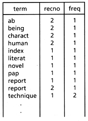
This format is based on the search methods and the weighting methods used, but a common search technique (and the one discussed here) is to use a binary search routine on the file to locate the query words. This implies that the file to be searched should be as short as possible, and for this reason the single file shown containing the terms, record ids, and frequencies is usually split into two pieces for searching: the dictionary containing the term, along with statistics about that term such as number of postings and IDF, and then a pointer to the location of the postings file for that term. The postings file contains the record ids and the weights for all occurrences of the term. In this manner the dictionary used in the binary search has only one "line" per unique term.
The above illustration is a conceptual form of the necessary files; the actual form depends on the details of the search routine and on the hardware being used. Work using large data sets (Harman and Candela 1990) showed that for a file of 2,653 records, there were 5,123 unique terms with an average of 14 postings/term and a maximum of over 2,000 postings for a term. A larger data set of 38,304 records had dictionaries on the order of 250,000 lines (250,000 unique terms, including some numerals) and an average of 88 postings per record. From these statistics it is clear that efficient storage structures for both the binary search and the reading of the postings are critical. Ideally, both files could be read into memory when a data set is opened. Somewhat less ideally, only the dictionary could be stored in memory, with disk access for the postings file. Usually, however, both parts of the index must be processed from disk. More details of the storage and use of these files is given in the description of the search process. Recent work on the effective use of inverted files suggests better ways of storing and searching these files (Burkowski 1990; Cutting and Pedersen 1990).
The dictionary and postings file shown (Figure 14.3) stores a term-weight of simply the raw frequency of a term in a record. If this is the actual weight stored, then all the calculations of term-weights must be done in the search routine itself, providing a heavy overhead per posting. There are four major options for storing weights in the postings file, each having advantages and disadvantages.
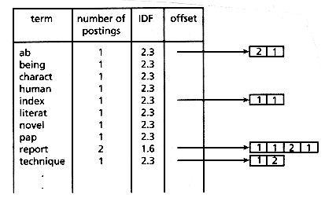
1. Store the raw frequency. This produces the slowest search (likely much too slow for large data sets), but the most flexible system in that term-weighting algorithms can be changed without changing the index.
2. Store a normalized frequency. Any of the normalized frequencies shown in section 14.5 can be used to translate the raw frequency to a normalized frequency. Using Harman's normalized frequency as an example, the raw frequency for each term from the final table of the inversion process would be transformed into a log function and then divided by the log of the length of the corresponding record (the lengths of the records were collected and saved in the parsing step). This operation would be done during the creation of the final dictionary and postings file, and this normalized frequency would be inserted in the postings file in place of the raw frequency shown. The same procedure could be done for Croft's normalized frequency or any other normalized frequency used in an inner product similarity function, assuming appropriate record statistics have been stored during parsing. However, this option is not suitable for use with the cosine similarity function using Salton's method as the normalization for length includes the IDF factor. The advantage of this term-weighting option is that updating (assuming only the addition of new records and not modification of old ones) would not require the postings to be changed. This option would improve response time considerably over option 1, although option 3 may be somewhat faster (depending on search hardware).
3. Store the completely weighted term. Again, any of the combination weighting schemes shown in section 14.5 are suitable, including those using the cosine similarity function. This option allows a simple addition of each weight during the search process, rather than first multiplying by the IDF of the term, and provides very fast response time. This was the option taken by Harman and Candela (1990) in searching on 806 megabytes of data. The disadvantage of this option is that updating requires changing all postings because the IDF is an integral part of the posting (and the IDF measure changes as any additions are made to the data set). Additionally, relevance feedback reweighting is difficult using this option.
4. If no within-record weighting is used, then the postings records do not have to store weights. All processing would be done in the search routines.
One way of using an inverted file to produce statistically ranked output is to first retrieve all records containing the search terms, then use the weighting information for each term in those records to compute the total weight for each of those retrieved records, and finally sort those records. The search time for this method is heavily dependent on the number of retrieved records and becomes prohibitive when used on large data sets.
This process can be made much less dependent on the number of records retrieved by using a method developed by Doszkocs for CITE (Doszkocs 1982). In this method, a block of storage was used as a hash table to accumulate the total record weights by hashing on the record id into unique "accumulator" addresses (for more details, see Doszkocs [1982]). This makes the searching process relatively independent of the number of retrieved records--only the sort for the final set of ranks is affected by the number of records being sorted.
This was the method chosen for the basic search process (see Figure 14.4). A block of storage containing an "accumulator" for every unique record id is reserved, usually on the order of 300 Kbytes for large data sets. The query is parsed using the same parser that was used for the index creation, with each term then checked against the stoplist for removal of common terms. If the query term is not common, it is then passed through the stemming routine and a binary search for that stem is executed against the dictionary. (For algorithms to do efficient binary searches, see Knuth [1973], and for an alternative to binary searching see section 14.7.4.) If the stem is found in the dictionary, the address of the postings list for that stem is returned, along with the corresponding IDF and the number of postings.
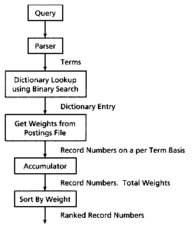
The next step is to use the address of the postings and the number of postings to read the record ids, with the total term-weight for each record id being added to the contents of its unique accumulator. If option 3 was used for weighting, then this total is immediately available and only a simple addition is needed. If option 2 was used for weighting, then the weight stored in the postings is the normalized frequency of the stem in that record, and this needs to be multiplied by the IDF of that stem before the addition. If option 1 was used for weighting, then the full term-weight must be calculated, as the weight stored in the posting is the raw frequency of the stem in that record. Loading the necessary record statistics, such as record length, into memory before searching is essential to maintain any reasonable response time for this weighting option. As each query term is processed, its postings cause further additions to the accumulators. When all the query terms have been handled, accumulators with nonzero weights are sorted to produce the final ranked record list.
There are several major inefficiencies of this technique. First, the I/O needs to be minimized. A read of one byte essentially takes the same time as a read of many bytes (a buffer full) and this factor can be utilized by doing a single read for all the postings of a given term, and then separating the buffer into record ids and weights. This requires a sequential storage of the postings in the index, with the postings pointer in the dictionary being used to control the location of the read operation, and the number of postings (also stored in the dictionary) being used to control the length of the read (and the separation of the butfer). As some terms have thousands of postings for large data sets, doing a separate read for each posting can be very time-consuming. This same logic could be applied to the binary search of the dictionary, which takes about 14 reads per search for the larger data sets. The time saved may be considerably less, however. A final time savings on I/O could be done by loading the dictionary into memory when opening a data set.
A second time savings can be gained at the expense of some memory space. Whereas the storage for the "accumulators" can be hashed to avoid having to hold one storage area for each data set record, this is definitely not necessary for smaller data sets, and may not be useful except for extremely large data sets such as those used in CITE (which need even more modification; see section 14.7.2). Some time is saved by direct access to memory rather than through hashing, and as many unique postings are involved in most queries, the total time savings may be considerable. Harman and Candela (1990) found that almost every user query had at least one term that had postings in half the data set, and usually at least three quarters of the data set was involved in most queries.
A final major bottleneck can be the sort step of the "accumulators" for large data sets. Even a fast sort of thousands of records is very time consuming. An enhancement can be made to reduce the number of records sorted (see section 14.7.5).
There are many possible modifications and enhancements to the basic indexing and search processes, some of which are necessary because of special retrieval environments (those involving large and very large data sets are discussed), and some of which are techniques for enhancing response time or improving ease of updating. Each of the following topics deals with a specific set of changes that need to be made in the basic indexing and/or search routines to allow the particular enhancement being discussed. The level of detail is somewhat less than in section 14.6, either because less detail is available or because the implementation of the technique is complex and details are left out in the interest of space. It should be noted that, unlike section 14.6, some of the implementations discussed here should be used with caution as they are usually more experimental, and may have unknown problems or side effects.
It was observed by Frakes (1984) and confirmed by Harman and Candela (1990) that if query terms were automatically stemmed in a ranking system, users generally got better results. In some cases, however, a stem is produced that leads to improper results, causing query failure. The basic indexing and search processes described in section 14.6 suggest no manner of coping with this problem, as the original record terms are not stored in the inverted file; only their stems are used. The following technique was developed for the prototype retrieval system described in Harman and Candela (1990) to handle this problem, but it is not thought to be an optimal method.
Clearly two separate inverted files could be created and stored, one for stems and one for the unstemmed terms. Query terms would normally use the stemmed version, but query terms marked with a "don't stem" character would be routed to the unstemmed version. Whereas this would solve the problem for smaller data sets, it creates a storage problem for the large data sets. A hybrid inverted file was devised to merge these files, saving no space in the dictionary part, but saving considerable storage over that needed to store two versions of the postings. This storage savings is at the expense of some additional search time and therefore may not be the optimal solution. An example of the merged inverted file is shown in Figure 14.5.
This hybrid dictionary is in alphabetic stem order, with the terms sorted within the stem, and contains the stem, the number of postings and IDF of the stem, the term, the number of postings and IDF of the term, a bit to indicate if the term is stemmed or not stemmed, and the offset of the postings for this stem/term combination. Note that the merged dictionary takes one line per unstemmed term, making it considerably larger than the stemmed dictionary, and resulting in longer binary searches for most terms (which will be stemmed). The hybrid postings list saves the storage necessary for one copy of the record id by merging the stemmed and unstemmed weight (creating a postings element of 3 positions for stemmed terms). Terms that have no stem for a given data set only have the basic 2-element postings record.
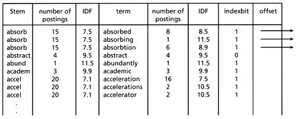
As can be expected, the search process needs major modifications to handle these hybrid inverted files. Each query term that is stemmed must now map to multiple dictionary entries, and postings lists must be handled more carefully as some terms have three elements in their postings list and some have only two.
Clearly, for data sets that are relatively small it is best to use the two separate inverted files because the storage savings are not large enough to justify the additional complexity in indexing and searching. Possibly the use of two separate dictionaries, both mapping to the same hybrid posting file, would improve search time without the loss of storage efficiency, but this has not been tried.
In 1982, MEDLINE had approximately 600,000 on-line records, with records being added at a rate of approximately 21,000 per month (Doszkocs 1982). The use of the fixed block of storage to accumulate record weights that is described in the basic search process (section 14.6) becomes impossible for this huge data set. Doszkocs solved the problem in his experimental front-end to MEDLINE (the CITE system) by segmenting the inverted file into 8K segments, each holding about 48,000 records, and then hashing these record addresses into the fixed block of accumulators. The basic search process is therefore unchanged except that instead of each record of the data set having a unique accumulator, the accumulators hold only a subset of the records and each subset is processed as if it were the entire data set, with each set of results shown to the user. The subsetting or segmenting is done in reverse chronological order. Because users are often most concerned with recent records, they seldom request to search many segments. For more details see Doszkocs (1982).
There are many ways to combine Boolean searches and ranking. A simple extension of the basic search process in section 14.6 can be made that allows noncomplex Boolean statements to be handled (see section 14.8.4). This extension, however, limits the Boolean capability and increases response time when using Boolean operators. Very elaborate schemes have been devised that combine Boolean with ranking, and references are made to these in section 14.8.3. However, none of these schemes involve extensions to the basic search process in section 14.6.
The SIRE system (Noreault, Koll, and McGill 1977) incorporates a full Boolean capability with a variation of the basic search process. The system accepts queries that are either Boolean logic strings (similar to many commercial on-line systems) or natural language queries (processed as Boolean queries with implicit OR connectors between all query terms). The user may request ranked output.
A Boolean query is processed in two steps. After stemming, each term in the query is checked against the inverted file (this could be done by using the binary search described in section 14.6). The record ids and raw frequencies for the term being processed are combined with those of the previous set of terms according to the appropriate Boolean logic. A running sum containing the numerator of the cosine similarity is updated by adding the new record frequencies, and this is continued until the entire Boolean query is processed. Note that this combining of sets for complex Boolean queries can be a complicated operation. If ranked output is wanted, the denominator of the cosine is computed from previously stored document lengths and the query length, and the records are sorted based on their similarity to the query.
Whereas the cosine similarity is used here with raw frequency term-weighting only (at least in the experiment described in Noreault, Koll and McGill [1977]), any of the term-weighting functions described in section 14.5 could be used. There are no modifications to the basic inverted file needed unless adjacency, field restrictions, and other such types of Boolean operations are desired. The major modification to the basic search process is to correctly merge postings from the query terms based on the Boolean logic in the query before ranking is done. As the final computations of the similarity measure and the sorting of the ranks are done only for those records that are selected by the Boolean logic, this enhancement probably has a faster response time for Boolean queries, and no increase in response time for natural language queries compared to the basic search process described in section 14.6.
The basic inverted file creation and search process described in section 14.6 assumes a fairly static data set or a willingness to do frequent updates to the entire inverted file. For smaller data sets, or for environments where ease of update and flexibility are more important than query response time, the inverted file could have a structure more conducive to updating. This was done in Croft's experimental re trieval system (Croft and Ruggles 1984). Their inverted file consists of the dictionary containing the terms and pointers to the postings file, but the dictionary is not alphabetically sorted. Instead it is a bucketed (10 slots/bucket) hash table that is accessed by hashing the query terms to find matching entries. Not only is this likely to be a faster access method than the binary search, but it also creates an extendable dictionary, with no reordering for updates. This necessity for ease of update also changes the postings structure, which becomes a series of linked variable length lists capable of infinite update expansion. The term-weighting is done in the search process using the raw frequencies stored in the postings lists.
This system therefore is much more flexible and much easier to update than the basic inverted file and search process described in section 14.6. Although the hash access method is likely faster than a binary search, the processing of the linked postings records and the search-time term-weighting will hurt response time considerably. This is not a major factor for small data sets and for some retrieval environments, especially those involved in research into new retrieval mechanisms.
Note that the binary search described in the basic search process could be replaced with the hashing method to further decrease response time for searching using the basic search process. This would require a different organization of the final inverted index file that contains the dictionary, but would not affect the postings lists (which would be sequentially stored for search time improvements).
A major time bottleneck in the basic search process is the sort of the accumulators for large data sets. Various methods have been developed for dealing with this problem. Buckley and Lewit (1985) presented an elaborate "stopping condition" for reducing the number of accumulators to be sorted without significantly affecting performance. Perry and Willett (1983) and Lucarella (1983) also described methods of reducing the number of cells involved in this final sort. The following method serves only as an illustration of a very simple pruning procedure, with an example of the time savings that can be expected using a pruning technique on a large data set. This method is based on the fact that most records for queries are retrieved based on matching only query terms of high data set frequency. These records are still sorted, but serve only to increase sort time, as they are seldom, if ever, useful. These records can be retrieved in the normal manner, but pruned before addition to the retrieved record list (and therefore not sorted). Harman and Candela (1990) experimented with various pruning algorithms using this method, looking for an algorithm that not only improved response time, but did not significantly hurt retrieval results. Their changed search algorithm with pruning is as follows:
1. Sort all query terms (stems) by decreasing IDF value.
2. Do a binary search for the first term (i.e., the highest IDF) and get the address of the postings list for that term.
3. Read the entire postings file for that term into a buffer and add the term weights for each record id into the contents of the unique accumulator for the record id.
4. Check the IDF of the next query term. If the IDF is greater than or equal to one third the maximum IDF of any term in the data set, then repeat steps 2, 3, and 4. Otherwise repeat steps 2, 3, and 4, but do not add weights to zero weight accumulators, that is, high-frequency (low IDF) terms are allowed to only increment the weights of already selected record ids, not select a new record.
5. Sort the accumulators with nonzero weights to produce the final ranked record list. Note that records containing only high-frequency terms will not have any weight added to their accumulator and therefore are not sorted.
6. If a query has only high-frequency terms (several user queries had this problem), then pruning cannot be done (or a fancier algorithm needs to be created). A check needs to be made after step 1 for this.
Table 14.1 shows some timing results of this pruning algorithm. The test queries are those brought in by users during testing of a prototype ranking retrieval system.
The response time for the 806 megabyte data set assumes parallel processing of the three parts of the data set, and would be longer if the data set could not be processed in parallel.
As can be seen, the response times are greatly affected by pruning. The other pruning techniques mentioned earlier should result in the same magnitude of time savings, making pruning techniques an important issue for ranking retrieval systems needing fast response times.
Ranking retrieval systems and relevance feedback have been closely connected throughout the past 25 years of research. Relevance feedback was one of the first features to be added to the basic SMART system (Salton 1971), and is the foundation for the probabilistic indexing model (Robertson and Sparck Jones 1976). Whereas ranking can be done without the use of relevance feedback, retrieval will be further improved by the addition of this query modification technique. For further details, see Chapter 11.
Ranking retrieval systems have also been closely associated with clustering. Early efforts to improve the efficiency of ranking systems for use in large data sets proposed the use of clustering techniques to avoid dealing with ranking the entire collection (Salton 1971). It was also suggested that clustering could improve the performance of retrieval by pregrouping like documents (Jardine and van Rijsbergen 1971). For further details on clustering and its use in ranking systems, see Chapter 16.
Because of the predominance of Boolean retrieval systems, several attempts have been made to integrate the ranking model and the Boolean model (for a summary, see Bookstein [1985]). The only methodology for this that has received widespread testing using the standard collections is the P-Norm method allowing the use of soft Boolean operators. This method is well described in Salton and Voorhees (1985) and in Chapter 15.
The basic ranking search methodology described in the chapter is so fast that it is effective to use in situations requiring simple restrictions on natural language queries. Examples of these types of restrictions would be requirements involving Boolean operators, proximity operators, special publication dates, specific authors, or the use of phrases instead of simple terms. These situations can be accommodated by the basic ranking search system using a two-level search. The input query is processed similarly to a natural language query, except that the system notes the presence of special syntax denoting phrase limits or other field or proximity limitations. Using the following examples
clustering using "nearest neighbor" techniques
efficient clustering techniques [Author Willett]
the queries would be parsed into single terms and the documents ranked as if there were no special syntax. An efficient file structure is used to record which query term appears in which given retrieved document. The list of ranked documents is returned as before, but only documents passing the added restriction are given to the user. This usually requires a second pass over the actual document, that is each document marked as containing "nearest" and "neighbor" is passed through a fast string search algorithm looking for the phrase "nearest neighbor," or all documents containing "Willett" have their author field checked for "Willett." Although this seems a tedious method of handling phrases or field restrictions, it can be done in parallel with user browsing operations so that users are often unaware that a second processing step is occurring. This method was used in the prototype built by Harman and Candela (1990) and provided a very effective way of handling phrases and other limitations without increasing indexing overhead.
It is possible to provide ranking using signature files (for details on signature files, see Chapter 4 on that subject). Croft and Savino (1988) provide a ranking technique that combines the IDF measure with an estimated normalized within-document frequency, using simple modifications of the standard signature file technique (see the chapter on signature files). That study also suggests that the ability of a ranking system to use the smaller inverted files discussed in this chapter makes storage and efficiency of ranking techniques competitive with that of signature files.
Signature files have also been used in SIBRIS, an operational information retrieval system (Wade et al. 1989), which is based on a two-stage search using signature files for a first cut and then ranking retrieved documents by term-weighting.
This chapter has presented a survey of statistical ranking models and experiments, and detailed the actual implementation of a basic ranking retrieval system. Extensions to this basic system have been shown that modify the basic system to efficiently handle different retrieval environments.
BELKIN, N. J. and W. B. CROFT. 1987. "Retrieval Techniques," in Williams, M. (Ed.), Annual Review of Information Science and Technology, ed. M. Williams, pp. 109-45. New York: Elsevier Science Publishers.
BARKLA, J. K. 1969. "Construction of Weighted Term Profiles by Measuring Frequency and Specificity in Relevant Items." Paper presented at the Second International Cranfield Conference on Mechanized Information Storage and Retrieval Systems, Cranfield, Bedford, England.
BERNSTEIN, L. M., and R. E. WILLIAMSON. 1984. "Testing of a Natural Language Retrieval System for a Full Text Knowledge Base." J. American Society for Information Science, 35(4), 235-47.
BOOKSTEIN, A. 1985. "Probability and Fuzzy-Set Applications to Information Retrieval," in Annual Review of Information Science and Technology, ed. M. Williams, pp. 117-51. New York: Knowledge Industry Publications, Inc.
BOOKSTEIN, A., and D. KRAFT. 1977. "Operations Research Applied to Document Indexing and Retrieval Decisions." J. Association for Computing Machinery, 24(3), 418-27.
BOOKSTEIN, A., and D. R. SWANSON. 1974. "Probabilistic Models for Automatic Indexing." J. American Society for Information Science, 25, 312-19.
BUCKLEY, C., and A. LEWIT. 1985. "Optimization of Inverted Vector Searches." Paper presented at the Eighth International Conference on Research and Development in Information Retrieval, Montreal, Canada.
BURKOWSKI, F. J. 1990. "Surrogate Subsets: A Free Space Management Strategy for the Index of a Text Retrieval System." Paper presented at ACM Conference on Research and Development in Information Retrieval, Brussels, Belgium.
CLEVERDON, C. 1983. "Optimizing Convenient Online Access to Bibliographic Databases." Information Services and Use, 4(1/2), 37-47.
COOPER, W. S., and M. E. MARON. 1978. "Foundations of Probabilistic and Utility-Theoretic Indexing." J. Association for Computing Machinery, 25(1), 67-80.
CROFT, W. B. 1983. "Experiments with Representation in a Document Retrieval System." Information Technology: Research and Development, 2(1), 1-21.
CROFT, W. B., and D. J. HARPER. 1979. "Using Probabilistic Models of Document Retrieval Without Relevance Information." Documentation, 35(4), 285-95.
CROFT, W. B., and L. RUGGLES. 1984. "The Implementation of a Document Retrieval System," in Research and Development in Information Retrieval, eds. G. Salton and H. J. Schneider, pp. 28-37. Berlin: Springer-Verlag.
CROFT, W. B., and P. SAVINO. 1988. "Implementing Ranking Strategies Using Text Signatures." ACM Transactions on Office Information Systems, 6(1), 42-62.
CUTTING, D., and J. PEDERSEN. 1990. "Optimizations for Dynamic Inverted Index Maintenance." Paper presented at ACM Conference on Research and Development in Information Retrieval, Brussels, Belgium.
DENNIS, S. F. 1964. "The Construction of a Thesaurus Automatically from a Sample of Text." Paper presented at the Statistical Association Methods for Mechanized Documentation. (National Bureau of Standards Miscellaneous Publication 269).
DOSZKOCS, T. E. 1982. "From Research to Application: The CITE Natural Language Information Retrieval System," in Research and Development in Information Retrieval, eds. G. Salton and H. J. Schneider, pp. 251-62. Berlin: Springer-Verlag.
FRAKES, W. B. 1984. "Term Conflation for Information Retrieval." Paper presented at the Third Joint BCS and ACM symposium on Research and Development in Information Retrieval, Cambridge, England.
HARMAN, D. 1986. "An Experimental Study of Factors Important in Document Ranking." Paper presented at ACM Conference on Research and Development in Information Retrieval, Pisa, Italy.
HARMAN, D., and G. CANDELA. 1990. "Retrieving Records from a Gigabyte of Text on a Minicomputer using Statistical Ranking." J. American Society for Information Science, in press.
HARPER, D. J. 1980. Relevance Feedback in Document Retrieval Systems: An Evaluation of Probabilistic Strategies. Doctoral dissertation, Jesus College, Cambridge, England.
HARTER, S. P. 1975. "A Probabilistic Approach to Automatic Keyword Indexing." J. American Society for Information Science, 26(5), 280-89.
JARDINE, N., and C. J. VAN RIJSBERGEN. 1971. "The Use of Hierarchic Clustering in Information Retrieval." Information Storage and Retrieval, 7(5), 217-40.
KNUTH, D. E. 1973. The Art of Computer Programming, Reading, Mass.: Addison-Wesley.
LOCHBAUM, K. E., and L. A. STREETER. 1989. "Comparing and Combining the Effectiveness of Latent Semantic Indexing and the Ordinary Vector Space Model for Information Retrieval." Information Processing and Management, 25(6), 665-76.
LUCARELLA, D. 1983. "A Document Retrieval System Based on Nearest Neighbor Searching." J. of Information Science, 6, 25-33.
LUHN, H. P. 1957. "A Statistical Approach to Mechanized Encoding and Searching of Literary Information." IBM J. Research and Development, 1(4), 309-17.
MARON, M. E., and J. L. KUHNS. 1960. "On Relevance, Probabilistic Indexing and Information Retrieval." J. Association for Computing Machinery, 7(3), 216-44.
MCGILL, M., M. KOLL, and T. NOREAULT. 1979. An Evaluation of Factors Affecting Document Ranking by Information Retrieval Systems. Report from the School of Information Studies, Syracuse University, Syracuse, New York.
MILLER, W. L. 1971. "A Probabilistic Search Strategy for Medlars." J. Documentation, 27(4), 254-66.
NOREAULT, T., M. KOLL, and M. MCGILL. 1977. "Automatic Ranked Output from Boolean Searches in SIRE." J. American Society for Information Science, 28(6), 333-39.
PERRY, S. A., and P. WILLETT. 1983. "A Review of the Use of Inverted Files for Best Match Searching in Information Retrieval Systems." J. Information Science, 6, 59-66.
RAGHAVAN, V. V., H. P. SHI, and C. T. YU. 1983. "Evaluation of the 2-Poisson Model as a Basis for Using Term Frequency Data in Searching." Paper presented at the Sixth International Conference on Research and Development in Information Retrieval, Bethesda, Maryland.
ROBERTSON, S. E., and K. SPARCK JONES. 1976. "Relevance Weighting of Search Terms." J. American Society for Information Science, 27(3), 129-46.
SALTON, G. 1971. The SMART Retrieval System -- Experiments in Automatic Document Processing. Englewood Cliffs, N.J.: Prentice Hall.
SALTON, G., and C. BUCKLEY. 1988. "Term-Weighting Approaches in Automatic Text Retrieval," Information Processing and Management, 24(5), 513-23.
SALTON, G., and M. E. LESK. 1968. "Computer Evaluation of Indexing and Text Processing." J. Association for Computing Machinery, 15(1), 8-36.
SALTON, G., and M. MCGILL. 1983. Introduction to Modern Information Retrieval. New York: McGraw-Hill.
SALTON, G., H. WU, and C. T. YU. 1981. "The Measurement of Term Importance in Automatic Indexing." J. American Society for Information Science, 32(3), 175-86.
SALTON, G., and C. S. YANG. 1973. "On the Specification of Term Values in Automatic Indexing." J. Documentation, 29(4), 351-72.
SPARCK JONES, K. 1972. "A Statistical Interpretation of Term Specificity and Its Application in Retrieval." J. Documentation, 28(1), 11-20.
SPARCK JONES, K. 1973. "Index Term Weighting." Information Storage and Retrieval, 9(11), 619-33.
SPARCK JONES, K. 1975. "A Performance Yardstick for Test Collections." J. Documentation, 31(4), 266-72.
SPARCK JONES, K. 1979a. "Experiments in Relevance Weighting of Search Terms." Information Processing and Management, 15(3), 133-44.
SPARCK JONES, K. 1979b. "Search Term Relevance Weighting Given Little Relevance Information." J. Documentation, 35(1), 30-48.
SPARCK JONES, K. 1981. Information Retrieval Experiment. London: Butterworths.
SRINIVASAN, P. 1989. "Intelligent Information Retrieval Using Rough Set Approximations." Information Processing and Management, 25(4), 347-61.
VAN RIJSBERGEN, C. J. 1976. "File Organization in Library Automation and Information Retrieval." J. Documentation, 32(4), 294-317.
WADE, S. J., P. WILLETT, and D. BAWDEN. 1989. "SIBRIS: the Sandwich Interactive Browsing and Ranking Information System." J. Information Science, 15, 249-60.
WALKER, S., and R. M. JONES. 1987. Improving Subject Retrieval in Online Catalogues, British Library Research Paper 24.
YU, C. T., and G. SALTON. 1976. "Precision Weighting -- An Effective Automatic Indexing Method." J. Association for Computing Machinery, 23(1), 76-88.
14.1 INTRODUCTION
14.2 HOW RANKING IS DONE
Figure 14.1: A simple illustration of statistical ranking
14.3 RANKING MODELS AND EXPERIMENTS WITH THESE MODELS
14.3.1 The Vector Space Model
tdij = the ith term in the vector for document j
tqik = the ith term in the vector for query k
n = the number of unique terms in the data set
14.3.2 Probabilistic Models
N = the number of documents in the collection
R = the number of relevant documents for query q
n = the number of documents having term t
r = the number of relevant documents having term t
Q = the number of matching terms between document j and query k
C = a constant for tuning the similarity function
ni = the number of documents having term i in the data set
N = the number of documents in the data set
Q = the number of matching terms between document j and query k
IDFi = the IDF weight for term i in the entire collection (see page 373 for
the definition of IDF)
freqij = the frequency of term i in document j
K = a constant for adjusting the relative importance of the two
weighting schemes
maxfreqj = the maximum frequency of any term in document j
14.3.3 Other Models for Ranking Individual Documents
14.3.4 Set-Oriented Ranking Models
14.4 OTHER EXPERIMENTS INVOLVING RANKING
14.4.1 Direct Comparison of Similarity Measures and Term-Weighting Schemes
14.4.2 Ranking Based on Document Structure
14.4.3 Ranking Techniques Used in Operational Systems
14.5 A GUIDE TO SELECTING RANKING TECHNIQUES
N = the number of documents in the collection
ni = the total number of occurrences of term i in the collection
maxn = the maximum frequency of any term in the collection
N = the number of documents in the collection
maxnoise = the highest noise of any term in the collection
Freqik = the frequency of term i in document k
TFreqi = the total frequency of term i in the collection
freqij = the frequency of term i in document j
maxfreqj = the maximum frequency of any term in document j
lengthj = the number of unique terms in document j
wij = freqij X IDFi
freqiq = the frequency of term i in query q
maxfreqj = the maximum frequency of any term in query maxfreqq
IDFi = the IDF of term i in the entire collection
freqij = the frequency of term i in document j
14.6 DATA STRUCTURES AND ALGORITHMS FOR RANKING
14.6.1 The Creation of an Inverted File
Figure 14.2: Inverted file with frequency information
Figure 14.3: A dictionary and postings file
14.6.2 Searching the Inverted File
Figure 14.4: Flowchart of search engine
14.7 MODIFICATIONS AND ENHANCEMENTS TO THE BASIC INDEXING AND SEARCH PROCESSES
14.7.1 Handling Both Stemmed and Unstemmed Query Terms
Figure 14.5: Merged dictionary and postings file
14.7.2 Searching in Very Large Data Sets
14.7.3 A Boolean System with Ranking
14.7.4 Hashing into the Dictionary and Other Enhancements for Ease of Updating
14.7.5 Pruning
Table 14.1:: Response Time
Size of Data Set 1.6 Meg 50 Meg 268 Meg 806 Meg
--------------------------------------------------------
Number of queries 13 38 17 17
--------------------------------------------------------
Average number of 4.1 3.5 3.5 3.5
terms per query
--------------------------------------------------------
Average number of 797 2843 5869 22654
records retrieved
--------------------------------------------------------
Average response time 0.38 1.2 2.6 4.1
per query (no pruning)
--------------------------------------------------------
Average response time 0.28 0.58 1.1 1.6
per query
(pruning)
14.8 TOPICS RELATED TO RANKING
14.8.1 Ranking and Relevance Feedback
14.8.2 Ranking and Clustering
14.8.3 Ranking and Boolean Systems
14.8.4 Use of Ranking in Two-level Search Schemes
14.8.5 Ranking and Signature Files
14.9 SUMMARY
REFERENCES